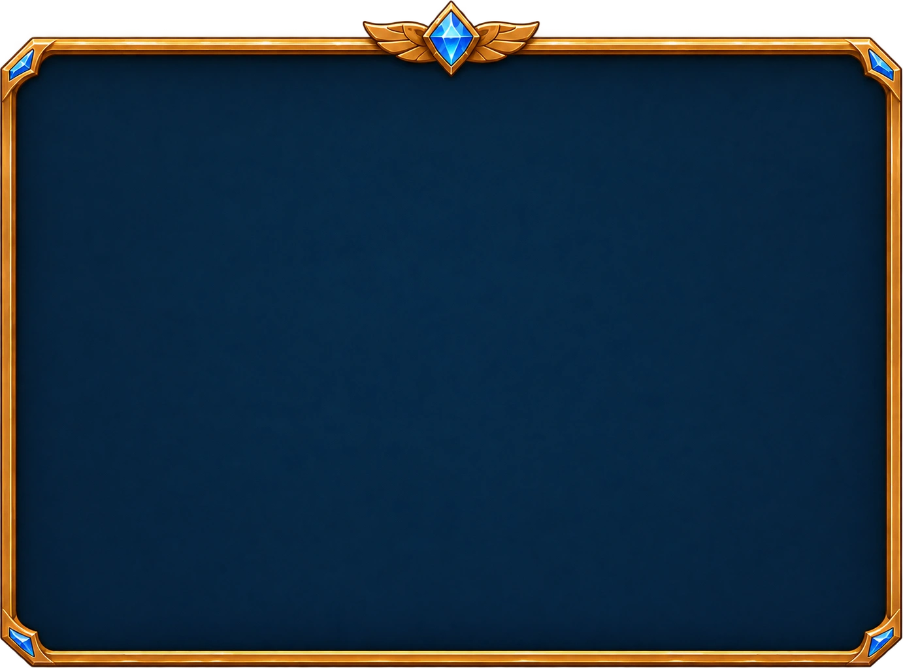

Společná cesta

 1Nyní2Příště
1Nyní2Příště
Oprava rozložení: horní vývoj zůstává, pouze spodní mřížku nahradily tři řádky schopností. Jedna nová odměna posílí schopnost a posune společnou cestu téhož hráče. Hranice 0 / 4 / 10 / 20 / 32 i účinky jsou návrhový model.
Horní část už obsahuje pět různých podob z UI chatu. Základ vychází ze zvolené úpravy výrazu; podoby 2–5 jsou nové statické návrhy k posouzení. Jejich podobu můžeš porovnat v galerii evolucí.